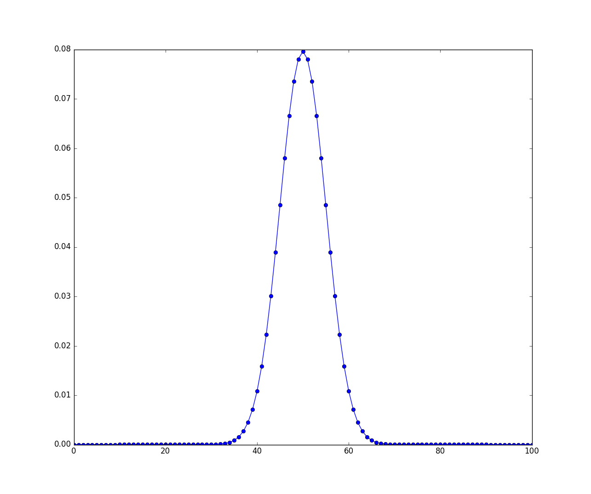

二项随机变量
1 伯努利随机变量和二项随机变量
假定一个实验，其结果可以分为成功或者失败。如果我们在试验的机故宫是成功时令\(X=1\)，而在试验的结果是失败时令\(X=0\)，那么\(X\)的概率质量函数是：
\begin{eqnarray} \label{eq:1} p(0)&=&P(X = 0) = 1-p \\ p(1)&=&P(X = 1) = p \end{eqnarray}其中\(p,0\leq p \leq 1\)是试验的结果为成功的概率。
随机变量\(X\)成为伯努利随机变量，如果其概率密度函数由式(\ref{eq:1})给出. 现在我们推广伯努利随机变量。
假定做了\(n\) 次试验，其中每次结果成功的概率为\(p\)，失败的概率为\(1-p\)，如果以\(X\)代表出现在\(n\)次试验中成功的次数，那么\(X\)称为具有参数\((n,p)\)的二项随机变量，其概率质量函数为：
\begin{equation} \label{eq:2} p(i) = \binom{n}{i}p^{i}(1-p)^{n-i}, i = 0,\ldots ,n \end{equation}可以通过二项式定理验证，这些概率加起来是1：
\begin{equation} \label{eq:3} \sum_{i=0}^{n}p(i) = \sum_{i=0}^{n} \binom{n}{i}p^{i}(1-p)^{n-i} = (p + (1-p))^{n} = 1 \end{equation}2 性质
接下来我们讨论二项分布的性质，先看期望和方差。
首先我们注意到：
\begin{equation} \label{eq:4} E[X^{k}] = \sum_{i=0}^{n}i^{k}\binom{n}{i}p^{i}(1-p)^{n-i} \end{equation}利用恒等式：
\begin{equation} \label{eq:5} i\binom{n}{i} = n\binom{n-1}{i-1} \end{equation}可得：
\begin{eqnarray} \label{eq:6} E[X^{k}]&=& np \sum_{i=1}^{n} i^{k-1}\binom{n-1}{k-1}p^{i-1}(1-p)^{n-i} \\ &=& np \sum_{i=1}^{n} (j+1)^{k-1} \binom{n-1}{j}p^{j}(1-p)^{n-1-j} \\ &=& npE[(Y+1)^{k-1}] \end{eqnarray}其中\(Y\)是一个\((n-1,p)\)的二项随机变量。在上面的式子中令\(k=1\)，可得：
\begin{equation} \label{eq:7} E[X] = np \end{equation}即如果每次试验成功的概率为\(p\)，那么\(n\)次独立重复试验的成功次数的期望等于\(np\). 令式 (\ref{eq:6})中的\(k=2\)，结合二项随机变量的期望公式，可得：
\begin{equation} \label{eq:8} E[X^{2}] = np E[Y+1] = np [(n-1)p +1] \end{equation}结合 式 (\ref{eq:7})，有：
\begin{equation} \label{eq:9} \mathrm{Var}(X) = E[X^{2}] - (E[x])^{2} = np[(n-1)p + 1] - (np)^{2} = np(1-p) \end{equation}综上可得结论：如果\(X\)是一个参数为\(n,p\)的二项随机变量，那么：
\begin{equation} \label{eq:10} E[X] = np \qquad \mathrm{Var}(X) = np(1-p) \end{equation}关于二项分布还有一个很重要的结论：
如果\(X\)是一个参数为\(n,p\)的二项随机变量，其中\(0 < p < 1\)，那么当\(k\)从\(0\)到\(n\)时，\(P\{X=k\}\)一开始单调递增，然后一直单调递减，当\(k = \lceil (n+1)p \rceil\)时取的最大值。
为证明这个命题，我们考虑\(P\{X=k\}/P\{X=k-1\}\)，对于给定的\(k\)，判定其与\(1\)的大小关系。
\begin{eqnarray} \label{eq:11} \frac{P\{X=k\}}{P\{X=k-1\}}&=&\frac{ \binom{n}{k}p^{k}(1-p)^{n-k} }{\binom{n}{k-1}p^{k-1}(1-p)^{n-k+1}} \\ &=& \frac{(n-k+1)p}{k(1-p)} \end{eqnarray}因此\(P\{X=k\} \geq P\{X=k-1\}\)，当且仅当:
\begin{equation} \label{eq:12} (n-k+1)p \geq k(1-p) \end{equation}等价于\(k\leq (n+1)p\)
注意上面的证明过程告诉我们了一种递归的计算二项分布的方法。
3 例子
针对上面的例子。使用python画出二项分布的pmf图。我使用 scipy.stats 提供的 binom 函数。
from scipy.stats import binom import numpy as np import matplotlib.pyplot as plt fig,ax = plt.subplots(1,1) n,p = 5,0.4 x = np.arange(binom.ppf(0,n,p),binom.ppf(1,n,p)) ax.plot(x, binom.pmf(x, n, p), 'bo', ms=8, label='binom pmf') ax.vlines(x, 0, binom.pmf(x, n, p), colors='b', lw=5, alpha=0.5) rv = binom(n, p) ax.vlines(x, 0, rv.pmf(x), colors='k', linestyles='-', lw=1,label='frozen pmf') ax.legend(loc='best', frameon=False) plt.show()
其概率质量函数如图1 所示。

图 1: 二项分布(5,0.4)的概率质量函数
4 使用python做试验
4.1 使用numpy
python的第三方库 numpy 提供了丰富的随机变量相关的函数。
这里我们使用：
import numpy as np
导入numpy，在numpy下有 numpy.random.binomial 函数，这个函数：
Draw samples from a binomial distribution.
生成10000个服从\((10,0.2)\)随机变量的样本。
s = numpy.random.binomial(10,0.5,10000)
我们知道服从二项分布\((10,0.5)\)的随机变量的期望是5，方差是2.5。
使用：
numpy.mean(s)
得到的输出是
In [243]: np.mean(s) Out[246]: 4.9936999999999996
这里为什么不是5？是因为取的样本太少的缘故。我们试着取一百万个样本：
In [247]: s = np.random.binomial(10,.5,1000000) In [251]: np.mean(s) Out[258]: 5.0037690000000001
可以看到均值还不严格的等于5，但是相对于一万个点得到的均值而言，一百万个样本点得到的均值更接近5.
使用 numpy.var() 可以查看样本点的方差。
In [261]: np.var(s) Out[268]: 2.5008423010268426
想象这样一个场景（这个例子来自于numpy.random.binomial的帮助文档）。一个石油勘探队挖10个井，每一个井出油的概率是0.1，那么挖了十个井后没有一个出油的概率是多大。我们可以从概率论的角度计算这个值：
\begin{equation} \label{eq:13} \binom{10}{0}(0.1)^{0}(0.9)^{10} = 0.348678 \end{equation}当然我们也可以模拟100000次这样的试验，然后统计没有一个出油的频率，即在100000次试验中，这个随机变量取值为零的概率。
import numpy as np s = np.random.binomial(10,0.1,100000) sum(s == 0)/100000
我们得到的值是0.3491。
类似的，我们可以计算这个勘探队挖的这些井里有1个出油的概率。
\begin{equation} \label{eq:14} \binom{10}{1}(0.1)(0.9)^{9} = 0.38742 \end{equation}我们实用100000次统计试验得出：
sum(s == 1)/100000
输出为0.38545. 依次类推我们可以计算：
\begin{eqnarray} \label{eq:16} p(n=2)&=&\binom{10}{2}(0.1)^{2}(0.9)^{8} = 0.1937 \\ p(n=3)&=&\binom{10}{3}(0.1)^{3}(0.9)^{7} = 0.05739 \\ p(n=4)&=&\binom{10}{4}(0.1)^{4}(0.9)^{6} = 0.01116 \\ p(n=5)&=&\binom{10}{5}(0.1)^{5}(0.9)^{5} = 0.001488 \\ p(n=6)&=&\binom{10}{6}(0.1)^{6}(0.9)^{4} = 0.00013778 \\ p(n=7)&=&\binom{10}{7}(0.1)^{7}(0.9)^{3} = 8.74\times 10^{-6} \\ \end{eqnarray}实用刚才的十万个样本点，我们可以得到：
sum(s == 2) / 100000 = 0.19411 sum(s == 3) / 100000 = 0.05804 sum(s == 4) / 100000 = 0.0116 sum(s == 5) / 100000 = 0.00167 sum(s == 6) / 100000 = 0.000149 sum(s == 7) / 100000 = 2e-5
我们可以看到当\(n=7\)的时候我们的计算结果是\(8.74\times 10^{-6} \)，但是统计得到的结果是\(2e-5\)。之所以出现如此大的差距是因为。样本点太小导致统计结果不准。对于较小的概率值\(p\)如果需要得到准确的估计，所需要的样本点大概是\(\frac{100}{p}\). 因此对于\(8.74\times 10^{-6}\)的概率值，我们需要大约\(8.74\times 10^{8}\)个样本点才可以比较准确的估计。
因为\(8.74\times 10^{8}\)实在是太大了，我的计算机受不了。我只好用10^7个点来粗略的看看。
In [535]: s = np.random.binomial(10,0.1,10000000) In [539]: sum(s == 7)/10000000 Out[555]: 9.0999999999999993e-06
最后的估计值是\(9\times 10^{-6}\)。
我们希望画出服从\((n,p)\)的二项分布的图像,也就是式 (\ref{eq:16})。这个时候我们需要使用 scipy
4.2 使用scipy
Python的第三方安装包scipy提供了很多科学计算程序。比如，在式 (\ref{eq:16})中，我使用 scipy.special.binom(N,n) 来计算\(\binom{N}{n}\).
在scipy提供的众多科学计算程序中，也提供了很多统计学程序包。这些程序包放在 scipy.stats 下。注意导入stats需要使用 from scipy import stats as S .
然后，使 S 就和使用 scipy.binom 携带的一些列函数。
比如画出二项分布\((100,0.1)\)的概率质量函数是：
1: from scipy.stats import binom 2: import numpy as np 3: import matplotlib.pyplot as plt 4: from scipy import stats as S 5: N,p = 100,0.1 6: x = np.arange(0,N+1,1) 7: y = S.binom.pmf(x,N,p) 8: ax = plt.plot(x,y,'-bo'); 9: plt.show()

图 2: 二项分布\((100,0.1)\)的概率质量函数
二项分布\((100,0.5)\)的概率质量函数，代码如下：
1: from scipy.stats import binom 2: import numpy as np 3: import matplotlib.pyplot as plt 4: from scipy import stats as S 5: N,p = 100,0.5 6: x = np.arange(0,N+1,1) 7: y = S.binom.pmf(x,N,p) 8: ax = plt.plot(x,y,'-bo'); 9: plt.show()
图形如下

图 3: 二项分布\((100,0.5)\)的概率质量函数